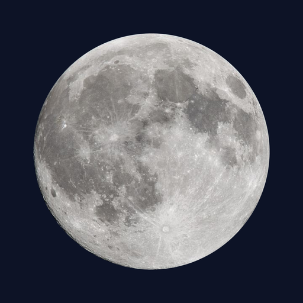

Parlo Moon
Moon phases, moonrise and moonset for where you are.
Download on the App Store · $1.99
See tonight's moon, when it rises and sets at your location, and a calendar of every phase and eclipse. Everything is calculated on your iPhone, so it works offline, with no account, no ads and no tracking.
Support
Questions, bugs or ideas: support@parlomedia.com. We usually reply within a few days.
Why are the rise and set times wrong?
Tap Change under the location line and choose "Use my location" or enter coordinates. Times use that place and your phone's clock and time zone. If hills or buildings block your horizon, set the Horizon height to match.
How do I add the widget?
Touch and hold the Home Screen, tap +, search "Parlo Moon", and pick a size. Lock Screen widgets are added the same way from the Lock Screen.
The widget shows the wrong place.
If you chose "Use my location", the widget follows your phone, though iOS decides when widgets refresh, so it can lag up to about an hour after travel. If you typed coordinates, the widget stays on that place. Opening the app refreshes it.
How do the reminders work?
Turn on Moonrise or Moonset at the bottom of the app. The app plans about a month of reminders each time you open it, so open it occasionally and after travelling.
Why does it say "none" for moonrise or moonset?
The moon rises about 50 minutes later each day, so some days have no rise or no set. The app then shows the next one, marked "tomorrow".
How do I print or save a month?
Open the Calendar, tap Print this month, and choose View PDF. From the viewer, use the share button to save it, text or email it, or print it.
Does the app need an account or internet?
No account. The moon calculations work offline. Cloud cover forecasts (United States only) and place names need an internet connection.
Cloud cover forecasts come from the National Weather Service.